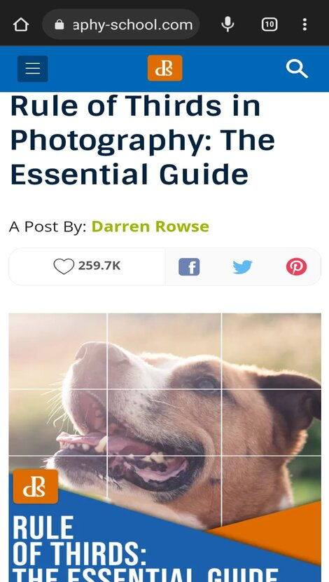

Hick's Law
The time it takes to make a decision increases with the number and complexity of choices. Google keeps the decisions required to enter a keyword to a minimum by eliminating any additional content that could distract from the act of typing a keyword or require additional decision-making. Hick's Law (or the Hick-Hyman Law) is named after a British and an American psychologist team of William Edmund Hick and Ray Hyman. In 1952, this pair set out to examine the relationship between the number of stimuli present and an individual's reaction time to any given stimulus. As you would expect, the more stimuli to choose from, the longer it takes the user to make a decision on which one to interact with. Users bombarded with choices have to take time to interpret and decide, giving them work they don't want.
Rule of Thirds
Digital Photography School
www.digitalphotographyschool.com
What is the rule of thirds? The rule of thirds is a composition guideline that places your subject in the left or right third of an image, leaving the other two thirds more open. While there are other forms of composition, the rule of thirds generally leads to compelling and well-composed shots.
Visual Hierarchy
Flux-academy
www.flux-academy.comVisual hierarchy is the principle of arranging elements to show their order of importance. y laying out elements logically and strategically, designers influence users' perceptions and guide them to desired actions. Hierarchy is a visual design principle which designers use to show the importance of each page/screen's contents by manipulating these characteristics: Size, Color, Contrast, Alignment, Repetition, Proximity, Whitespace, Texture and Style.